class:inverse ### Shape Metrics for Neuron Morphology --- class:inverse ### Goal: Catalog Neuron Types 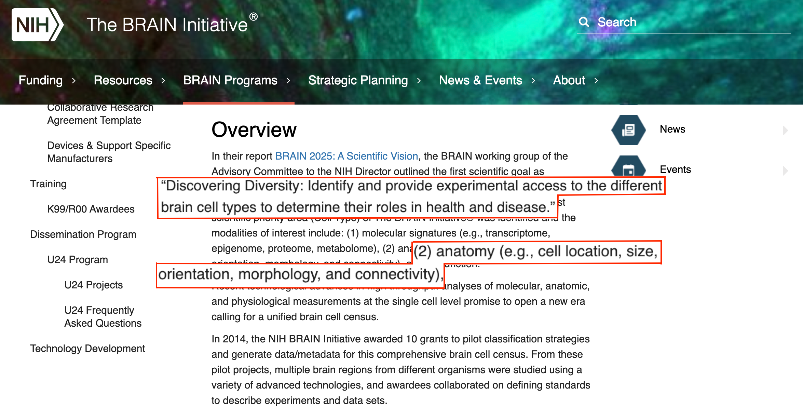 --- class:inverse ### Current Morphological Analysis <div class="row"> <div class="column"> * 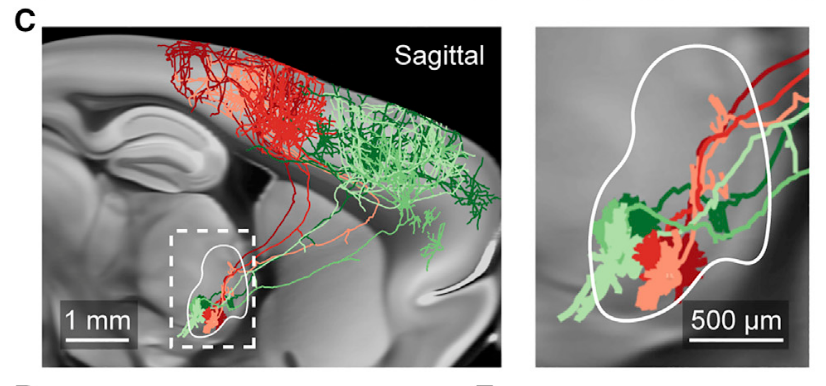 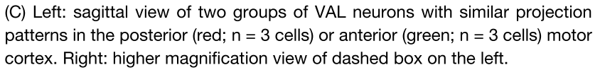 ** 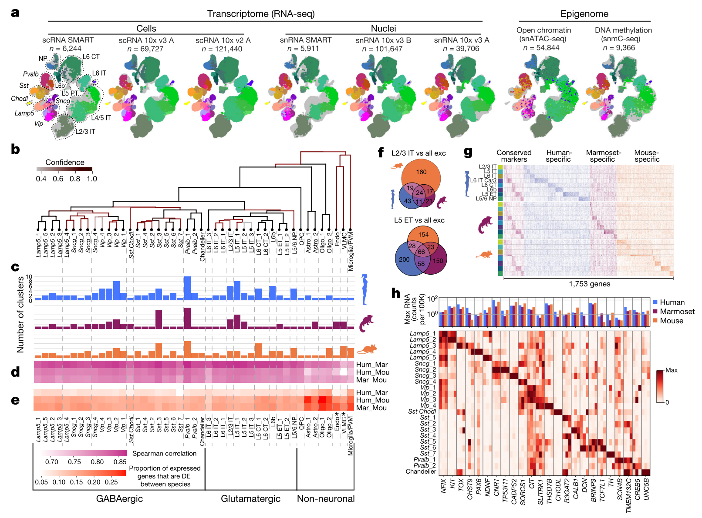 </div> <div class="column"> * 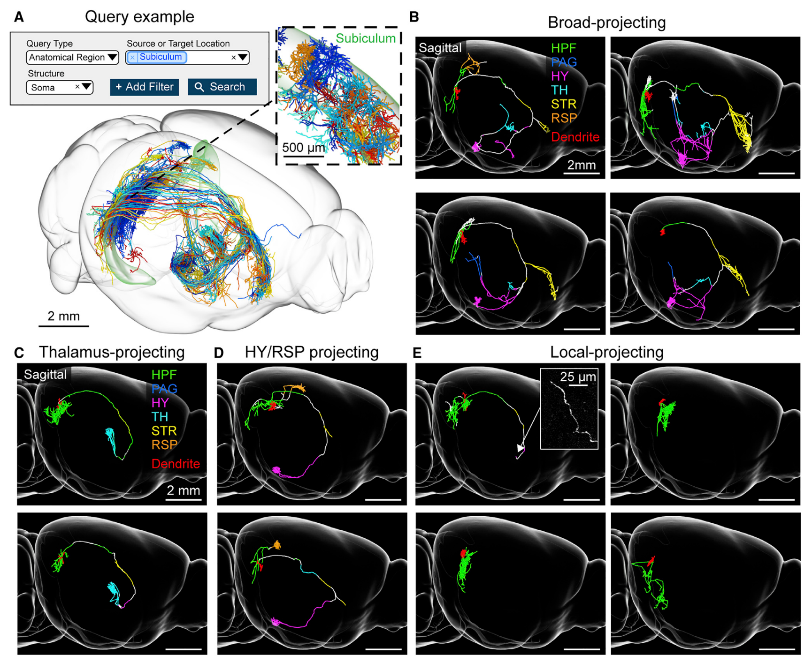 ** 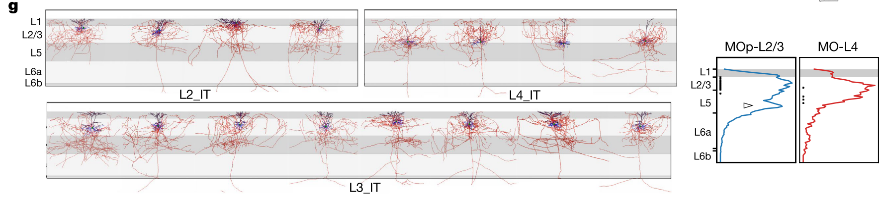 <font size="-1">* Winnubst et. al., 2019, <i>Cell</i>. ** BICCN, 2021, <i>Nature</i>. </font> </div> </div> --- class:inverse ### nblast "Metric" 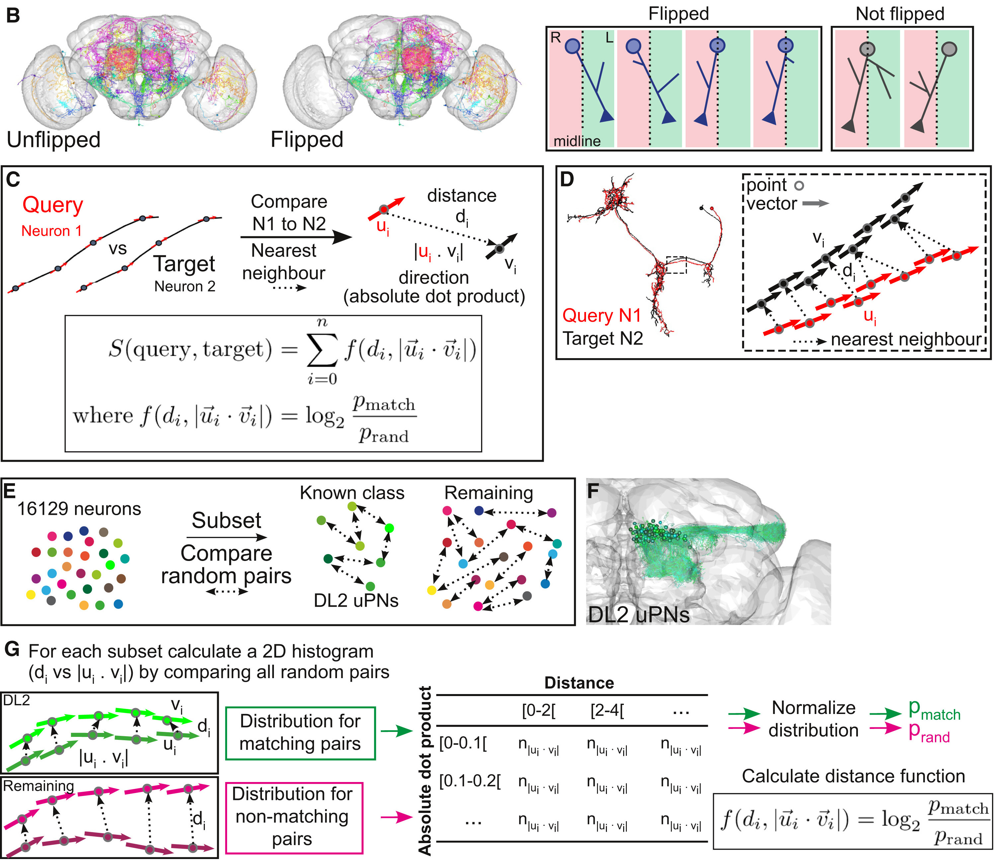 <footer, style="font-size: 12px"> Costa et. al., 2016 </footer> --- class:inverse ### [SWC](http://www.neuronland.org/NLMorphologyConverter/MorphologyFormats/SWC/Spec.html) Data Format 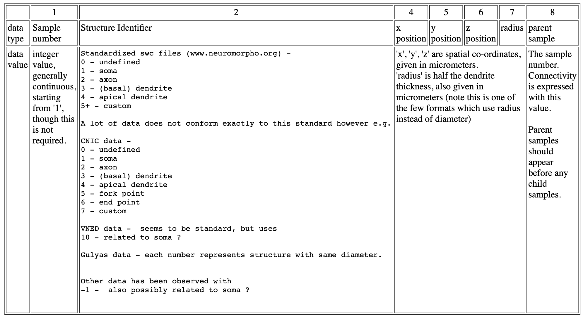 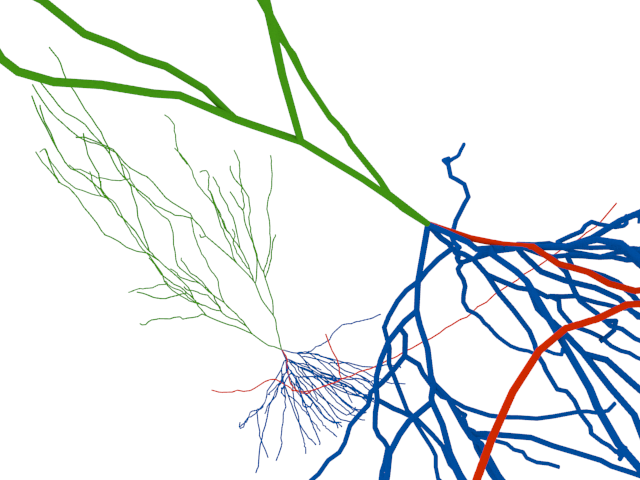 --- class:inverse ### Available Data [Neuromorpho.org](https://neuromorpho.org/) - 200k+ public traces 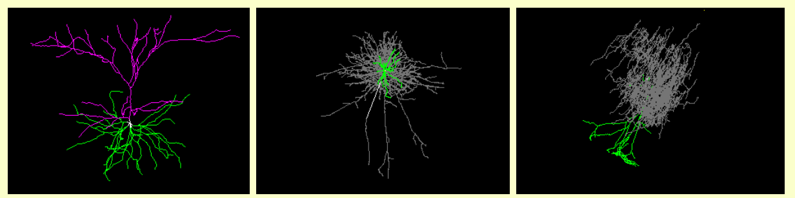 <div class="row"> <div class="column"> Recent axon traces from MouseLight project 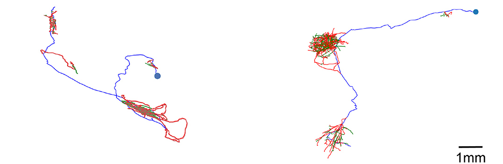 </div> <div class="column"> New Data from Kolodkin Lab 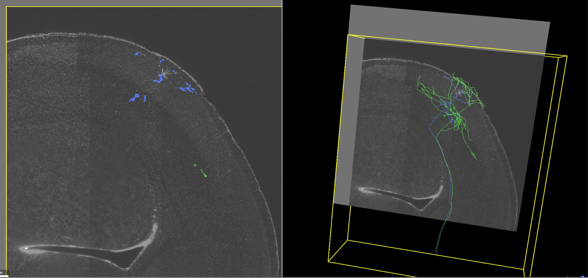 </div> </div> --- class:inverse ### Some Statistics on MouseLight Data - Brain 1: 180 traces, Brain 2: 50 traces <div class="row"> <div class="column"> Number of Knots in a Neuron Trace 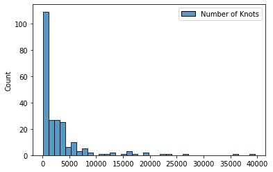 </div> <div class="column"> Number of Branches in a Neuron Trace 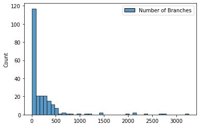 </div> <div class="row"> <div class="column"> 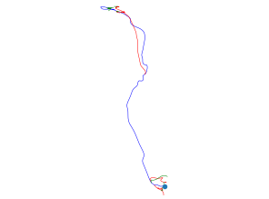 </div> <div class="column"> 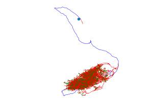 </div> </div>